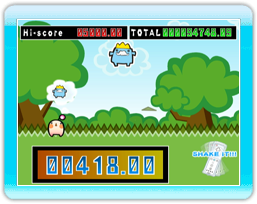

Let op de spraakballon boven  en als een soortgelijke
en als een soortgelijke  op het scherm verschijnt, is het tijd om er op los te ratelen, te schudden en te rollen! Als je de bewegingen goed timet, verdien je extra tijd. Maar als je op het verkeerde moment ratelt of een paar mist, wordt er tijd afgetrokken. Blijf ratelen en verdien een ratelgoede score!
op het scherm verschijnt, is het tijd om er op los te ratelen, te schudden en te rollen! Als je de bewegingen goed timet, verdien je extra tijd. Maar als je op het verkeerde moment ratelt of een paar mist, wordt er tijd afgetrokken. Blijf ratelen en verdien een ratelgoede score!